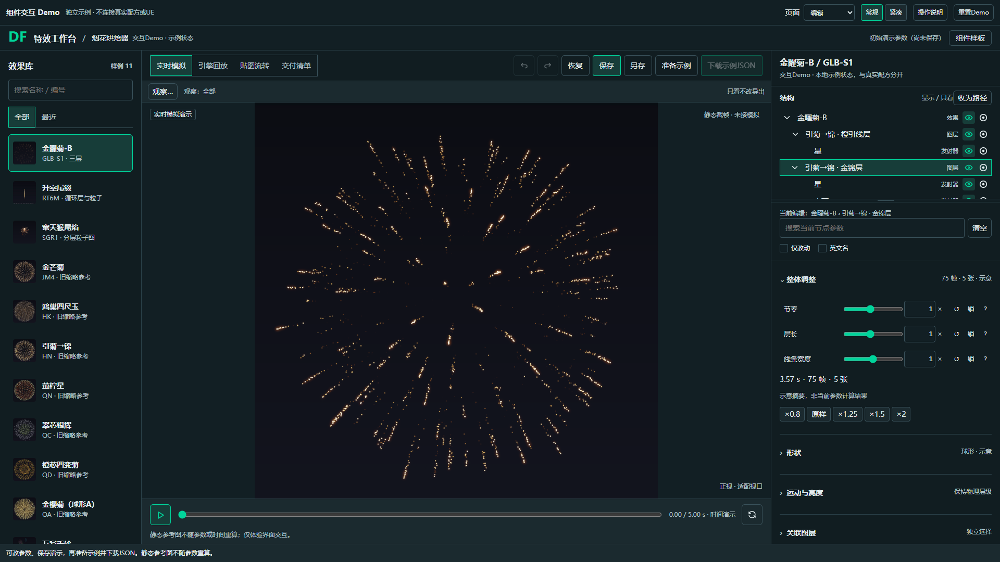
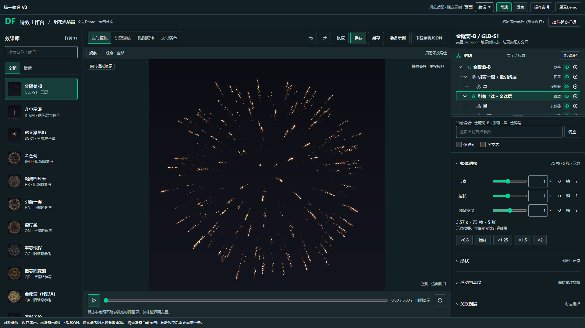

前后对照
左侧为保留的v1 Demo，右侧为统一候选v3。均为1920×1080 CSS px、DPR1、默认示例状态。结构区新增图标与导线来自你已选定的方向；控件变化见下方说明。点图片可查看原尺寸。




本轮有意调整
同用途控件统一4px小圆角，输入边界与分隔线各自采用已有颜色角色；焦点可见、错误就地说明，常规/紧凑同源。窄参数栏将名称与动作放在首行，滑杆、数值和单位放在第二行，防止控件被横向挤出；宽栏保持同一行对齐。
保留结构布局/树序/缩进/行高，继承已选类型图标与父子导线。交付预览仍优先，切回编辑恢复上下文。导入设置改变会作废原确认，要求重检查后核对。
原稿保留用于对照。两边的演示存档键相互隔离，截图不代表真实烘焙、导出或UE结果。